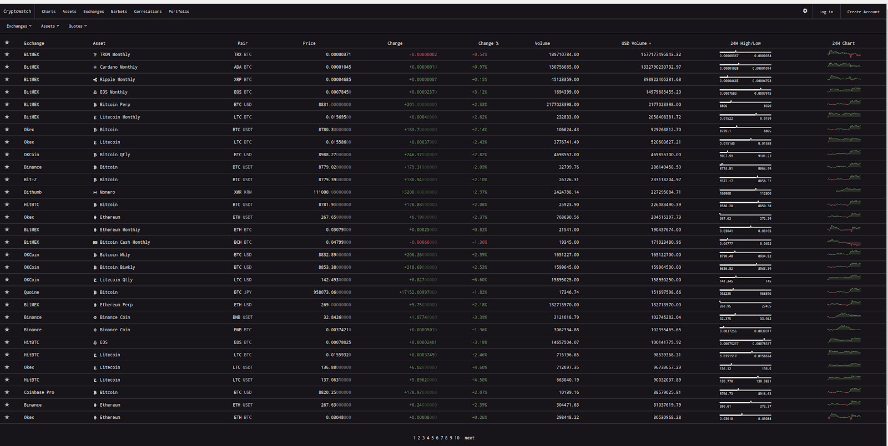
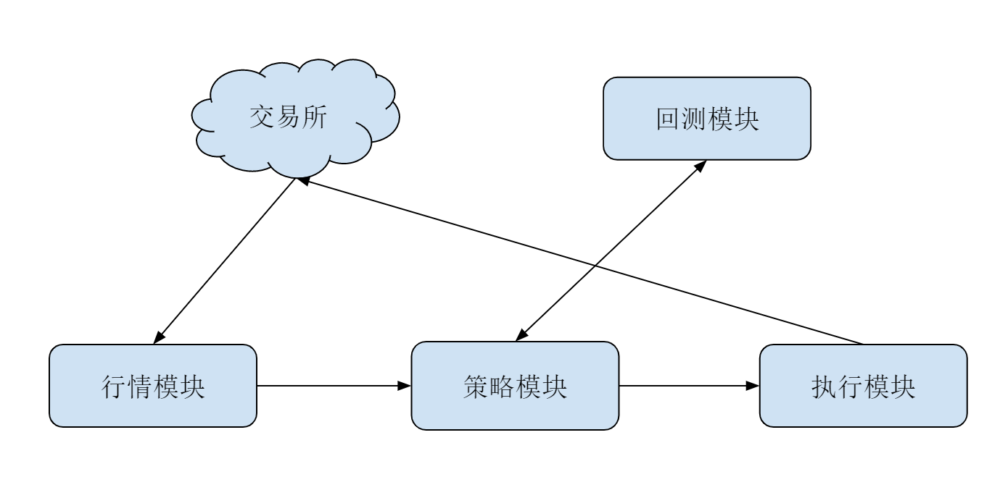
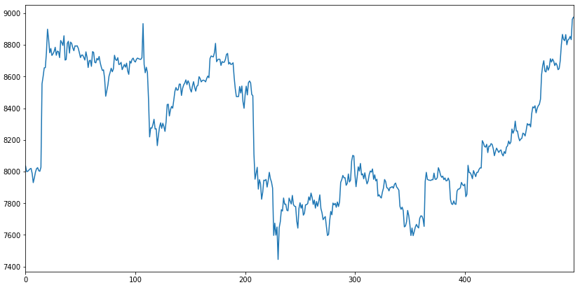

- 00 开篇词 从工程的角度深入理解Python.md
- 01 如何逐步突破，成为Python高手？.md
- 02 Jupyter Notebook为什么是现代Python的必学技术？.md
- 03 列表和元组，到底用哪一个？.md
- 04 字典、集合，你真的了解吗？.md
- 05 深入浅出字符串.md
- 06 Python “黑箱”：输入与输出.md
- 07 修炼基本功：条件与循环.md
- 08 异常处理：如何提高程序的稳定性？.md
- 09 不可或缺的自定义函数.md
- 10 简约不简单的匿名函数.md
- 11 面向对象（上）：从生活中的类比说起.md
- 12 面向对象（下）：如何实现一个搜索引擎？.md
- 13 搭建积木：Python 模块化.md
- 14 答疑（一）：列表和元组的内部实现是怎样的？.md
- 15 Python对象的比较、拷贝.md
- 16 值传递，引用传递or其他，Python里参数是如何传递的？.md
- 17 强大的装饰器.md
- 18 metaclass，是潘多拉魔盒还是阿拉丁神灯？.md
- 19 深入理解迭代器和生成器.md
- 20 揭秘 Python 协程.md
- 21 Python并发编程之Futures.md
- 22 并发编程之Asyncio.md
- 23 你真的懂Python GIL（全局解释器锁）吗？.md
- 24 带你解析 Python 垃圾回收机制.md
- 25 答疑（二）：GIL与多线程是什么关系呢？.md
- 26 活都来不及干了，还有空注意代码风格？！.md
- 27 学会合理分解代码，提高代码可读性.md
- 28 如何合理利用assert？.md
- 29 巧用上下文管理器和With语句精简代码.md
- 30 真的有必要写单元测试吗？.md
- 31 pdb & cProfile：调试和性能分析的法宝.md
- 32 答疑（三）：如何选择合适的异常处理方式？.md
- 33 带你初探量化世界.md
- 34 RESTful & Socket：搭建交易执行层核心.md
- 35 RESTful & Socket：行情数据对接和抓取.md
- 36 Pandas & Numpy：策略与回测系统.md
- 37 Kafka & ZMQ：自动化交易流水线.md
- 38 MySQL：日志和数据存储系统.md
- 39 Django：搭建监控平台.md
- 40 总结：Python中的数据结构与算法全景.md
- 41 硅谷一线互联网公司的工作体验.md
- 42 细数技术研发的注意事项.md
- 43 Q&A：聊一聊职业发展和选择.md
- 加餐 带你上手SWIG：一份清晰好用的SWIG编程实践指南.md
- 结束语 技术之外的几点成长建议.md
33 带你初探量化世界
你好，我是景霄。
在2000 年顶峰时期，高盛雇佣了 600 名交易员为机构客户买卖现金股票。可如今，这个数字只有 2 名（Ref. 经济学人）。到了2009 年，金融危机余音未散，专家面对股票和证券交易中越来越多的机器参与提出了警告，因为机器的崛起，逐渐导致了手操交易工作的消失。
很久之前，瑞银集团（UBS）的交易大厅是下面这样的：
8 年之后，交易大厅就已经只有这些人了：
事实上，随着数据处理技术的飞速发展，和量化交易模型研究理论的逐渐成熟，现金股票交易、债券市场、期货市场以及投行的相当一部分业务，都在朝着自动化的方向迈进。
而发展到2017 年，WannyCry 席卷全球，随之而来的比特币，在短短几个月内从小众玩家走入了公众视野，币价也是一飞冲天，很多炒币的人赚得盆满钵满。更有一部分人，将金融业的量化策略应用其中，无论是搬砖（套利），还是波段，在不成熟的市场初期都赚了个爽快。
这节课开始，我们就来探索一下量化的世界。作为我们 Python 专栏的综合实践模块，希望你能在这一部分内容中，收获自己独特的东西。
交易是什么？
市场，是人类有史以来最伟大的发明之一。亚当·斯密在国富论中，用“看不见的手”这个概念，生动形象地阐释了市场和理性人之间是如何交互，最终让整个社会受益的。
而市场的核心，是交换。人类发展最开始是物物交换，原始的“以物易物”的方式产生于货币诞生之前。不过，这种方式非常低效，不便于流通交换，经常会出现的情况是，要走很长的交换链条才能拿到自己想要的物品。于是，一般等价物出现了，社会分工也逐渐出现了。人们把自己生产的商品换成一般等价物，然后再换成自己需要的其他商品。
而交换的核心，就是买和卖。当买卖双方对价格预期相等的时候，交易达成。随着金融和技术的发展，逐渐出现了股票、债券、期权、期货等越来越多的金融工具，金融衍生品也朝着复杂的方向发展。
在我们经常听到的投资银行中，量化基金交易员这种角色，所做的事情，就是在这些复杂的衍生品基础上，分析投资标的的价值，然后以某种策略来管理持有仓位，进行买进和卖出。
为什么交易能赚钱，是很多人疑惑不解的地方。市场究竟有没有规律可循呢？可以肯定是有的，但虽有迹可循却无法可依。交易的多样性和人性的复杂性，使得金融数据的噪音极大，我们无法简单地从某一两个因子来确定地推导行情变化。
所以交易员这个行业本身，对自身素质要求是极高的。除了要具备扎实的专业素养（包括金融功底、数理逻辑、分析能力、决策能力），对心理素质的要求也非常高。这种直接和钱打交道、并直面人性深处欲望的行业，也因此吸引了无数高手的参与，很多人因此暴富，也有不少人破产，一无所有。
那么，有什么办法可以规避这种，因为心理素质原因带来的风险呢？
量化交易
回答这个问题之前，我先插一句题外话。刚接触量化交易的朋友，都很容易被这几个词绕晕：量化交易（Quantitative Trading）、程序化交易（Program Trading）、算法交易（Algo-Trading）、高频交易（High Frequency Trading）和自动化交易平台（Automated Trading System）。
虽然我遇到过不少行业内的人也混用这词，但是作为初学者来说，厘清这些术语还是很有帮助的。至少，在别人说出这些高大上的词时，我们心里不用犯怵了。
先来看程序化交易，它通常用计算机程序代替交易员，来具体执行金融产品的买卖。比如，一个基金经理需要卖出大量股票。如果直接挂一个大的卖单，可能会影响市场，那就用计算机程序拆分成小单慢慢执行。所以，量化交易的下层通常是程序交易。
而算法交易通常用于高频交易中。它指的是，通过算法快速判定买卖的时间点，快速买卖多个产品。
量化交易则通常是指使用数学、统计甚至机器学习的方法，去找寻合适的买卖时机。所以，在这个维度的定义之下，算法交易、高频交易还有统计套利（Statistical Arbitrage）都可以算作量化交易。
简单而言，我们可以认为量化交易的涵盖范围最大。因此，当你不确定用哪个词的时候，用量化交易就行了。
回到我们刚刚的问题，规避心理素质原因带来的风险的方法，自然就是量化交易了。量化交易的好处显而易见。最直观来看，计算机不眠不休，不需要交易员实时操盘，满足了人们“躺着挣钱”的愿景。当然，这只是美好的想象，真要这么做的话，不久之后就要回工地搬砖了。现实场景中，成熟的量化交易也需要有人蹲守，适时干预，防止算法突然失效造成巨额的交易亏损。
在数字货币领域的交易，这一点更加显著。数字货币的交易在全球许多交易所进行，和股票不同，一支股票可能只在少数几个交易所交易，而一种数字货币可以在所有的交易所同时进行交易。同时，因为没有股市的开盘、收盘限制，数字货币的交易通常是 7 x 24 小时不眠不休，比前世的 “996 福报”凶残多了。要是真有交易员能在这个市场活下来，我们尊称一声“神仙”也不为过了。
多交易所交易，也意味着全球数字货币市场每时每刻都是紧密相连的。一个市场、一个局部的巨大变动，都会影响所有的市场。比如，2017年朝鲜氢弹炸了的当天，新闻还没出来，隔壁韩国、日本的比特币价格马上拉升了一波；再比如，当比特币的负面消息半夜里传出来的时候，其价格也马上跟着暴跌一波。

2019年6月比特币在全球头部交易所的价格
因此，我们经常看到比特币的价格波动巨大。很有可能今天还是财富自由状态，明天的财富就没那么自由了。显然，在这种市场中交易，人力很难持久支撑，而量化交易就很合适了。
通常的电子盘交易（比如股票，数字货币），是通过券商或者软件，直接把买卖请求发送给交易所；而算法交易的底层，就是让程序来自动实现这类操作。券商或者交易所，通常也会提供API接口给投资者。比如，盈透证券（Interactive Broker）的接口，就可以支持股票、期权的行情数据获取和交易；而 Gemini、OKCoin等交易所，也提供了对应的接口进行数字货币行情获取和交易。
Gemini交易所的公开行情API，就可以通过下面这种简单的HTTP GET请求，来获取最近的比特币（BTC）对美元（USD）的价格和最近的成交量。
########## GEMINI行情接口 ##########
## https://api.gemini.com/v1/pubticker/:symbol
import json
import requests
gemini_ticker = 'https://api.gemini.com/v1/pubticker/{}'
symbol = 'btcusd'
btc_data = requests.get(gemini_ticker.format(symbol)).json()
print(json.dumps(btc_data, indent=4))
########## 输出 ##########
{
"bid": "8825.88",
"ask": "8827.52",
"volume": {
"BTC": "910.0838782726",
"USD": "7972904.560901317851",
"timestamp": 1560643800000
},
"last": "8838.45"
}
对算法交易系统来说，API只是最下层的结构。通常而言，一个基本的交易系统应该包括：行情模块、策略模块和执行模块。为了辅助策略的开发，通常还有回测系统辅助。它们的分工示意图大致如下：

其中，
- 行情模块的主要功能是，尝试获取市场的行情数据，通常也负责获取交易账户的状态。
- 策略模块的主要功能是，订阅市场的数据，根据设定的算法发出买、卖指令给执行模块。
- 执行模块的主要功能是，接受并把策略模块发过来的买、卖指令封装并转发到交易所；同时，监督并确保策略买卖的完整执行。
Python算法交易
了解了这么多关于量化交易的知识，接下来我们就来说说Python算法交易。Python 在金融行业的许多方面都有用到，在算法交易领域，更是发挥了日益重要的作用。 Python 之所以能在这个行业这么流行，主要是因为下面四个原因。
数据分析能力
第一个原因，是Python的数据分析能力。算法交易领域的一个基本需求，就是高效数据处理能力，而数据处理则是Python的强项。特别是NumPy+Pandas的组合，简直让算法交易开发者的生活质量直线上升。
我们可以用一个简单的例子来展示一下，如何抓取、格式化和绘制，比特币过去一个小时在Gemini交易所的价格曲线。相关的代码我都附了详细注释，这里就不再多讲，你阅读了解一下即可。
import matplotlib.pyplot as plt
import pandas as pd
import requests
# 选择要获取的数据时间段
periods = '3600'
# 通过Http抓取btc历史价格数据
resp = requests.get('https://api.cryptowat.ch/markets/gemini/btcusd/ohlc',
params={
'periods': periods
})
data = resp.json()
# 转换成pandas data frame
df = pd.DataFrame(
data['result'][periods],
columns=[
'CloseTime',
'OpenPrice',
'HighPrice',
'LowPrice',
'ClosePrice',
'Volume',
'NA'])
# 输出DataFrame的头部几行
print(df.head())
# 绘制btc价格曲线
df['ClosePrice'].plot(figsize=(14, 7))
plt.show()
########### 输出 ###############
CloseTime OpenPrice HighPrice ... ClosePrice Volume NA
0 1558843200 8030.55 8046.30 ... 8011.20 11.642968 93432.459964
1 1558846800 8002.76 8050.33 ... 8034.48 8.575682 68870.145895
2 1558850400 8031.61 8036.14 ... 8000.00 15.659680 125384.519063
3 1558854000 8000.00 8016.29 ... 8001.46 38.171420 304342.048892
4 1558857600 8002.69 8023.11 ... 8009.24 3.582830 28716.385009
通过执行这样的一段代码，我们便可以得到下面这张图所示的价格曲线。

大量专有库
除了强大的数据处理能力之外，Python 还有许许多多已经开发成熟的算法交易库可供使用。比如，你可以使用Zipline进行策略回测，或者用Pyfolio进行投资组合分析。而许多交易所也都提供了基于Python的API客户端。
便利的交易平台
第三个原因，是因为便利的交易平台。有一些算法交易平台可以执行自定义 Python 策略，无需搭建量化交易框架。算法交易平台，实际上等效于帮用户完成了行情模块和执行模块。用户只需要在其中定义策略模块，即可进行算法交易和回测。
比如，Quantopian，就提供了基于Zipline的标准回测环境。用户可以选择Python作为开发语言，并且和社区的网友分享自己的策略。此外，国内也有诸如BigQuant、果仁网等类似平台，提供不同市场和金融产品的交易。
广泛的行业应用
最后一个原因，则是Python本身广泛的行业应用了。目前，越来越多投资机构的交易部门，都开始使用Python，因此也对优秀的Python开发者产生了更多的需求。自然，这也让学习Python，成为了更有意义的“投资”。
总结
这一节课，我们介绍了交易，以及算法交易中的基本概念，也简单介绍了为什么要学习 Python 来搭建量化交易系统。量化交易是交易行业的大趋势；同时， Python 作为最适合量化从业者的语言之一，对于初学者而言也有着非常重要的地位。
接下来的几节课，我们将从细节深入量化交易的每一个模块，由浅入深地为你揭开量化交易神秘的面纱。
思考题
最后给你留一道思考题。高频交易和中低频交易，哪个更适合使用 Python？为什么？欢迎在留言区写下你的想法，也欢迎你把这篇文章分享给更多对量化交易感兴趣的人，我们一起交流和探讨。
© 2019 - 2023 Liangliang Lee. Powered by gin and hexo-theme-book.